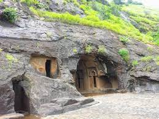
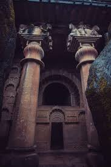
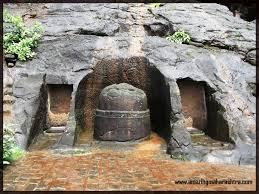
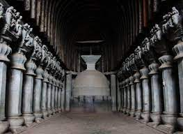
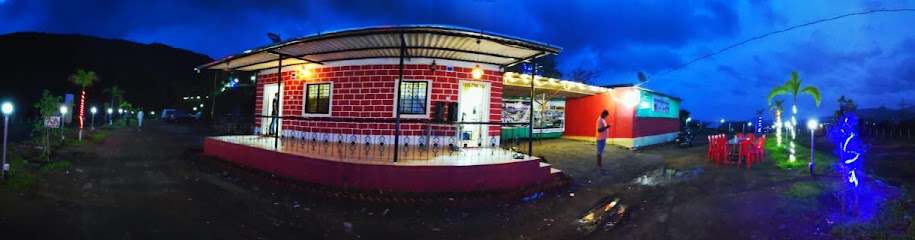

BEDSE
CAVES




Bedse Caves (also known as Bedsa Caves) are a group of Buddhist rock-cut monuments situated in Maval taluka, Pune District, Maharashtra, India. The history of the caves can be traced back to the Satavahana period in the 1st century BCE.They are some 9 km from the Bhaja Caves. Other caves in the area are Karla Caves, Patan Buddhist Cave and Nasik Caves.There are two main caves. The best known cave is the chaitya (prayer hall - Cave 7) with a comparatively large stupa, the other cave is the monastery or vihara (Cave 11). They are marked by a profusion of decorative gavaksha or chaitya arch motifs.
Bedse Caves are comparatively less known and less visited. People know about the nearby Karla Caves and Bhaja Caves but have hardly heard of Bedse Caves. The trilogy of the caves (Karla - Bhaje - Bedse) in Mawal Region can't be completed without Bedse. An easy hike through 400 steps leads to the caves. Also close to the Bedse caves are the famous foursome of Lohagad, Visapur, Tung and Tikona forts adjoining the Pawana Dam.
The best time to visit Bedse Caves is the rainy season as the hills are filled with lush greenery during that time. Also many small waterfalls are created that can only be enjoyed during the rainy season. As this is one of the lesser known spots, not many tourists throng the place, so makes it easy to enjoy the views.
How to reach
Nearby Places

Hotel Krushnai Athavan Farm House